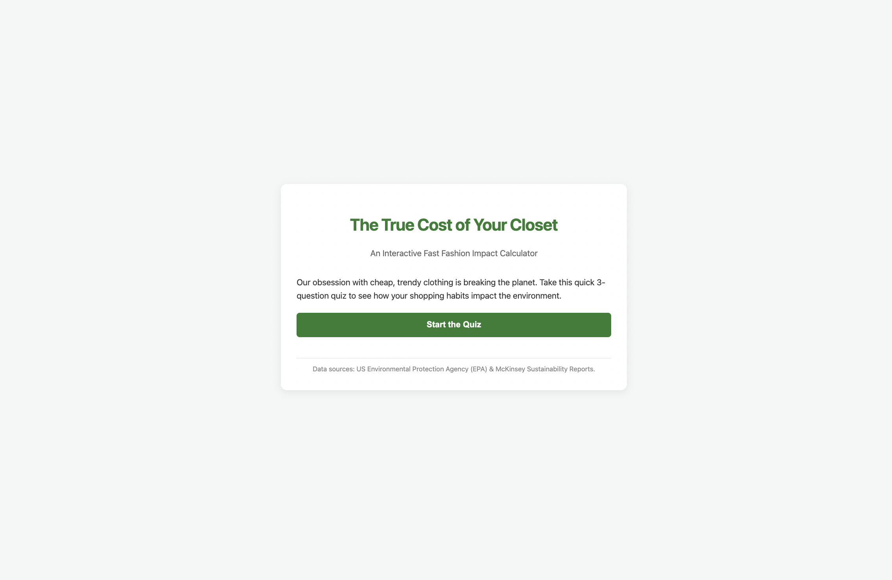
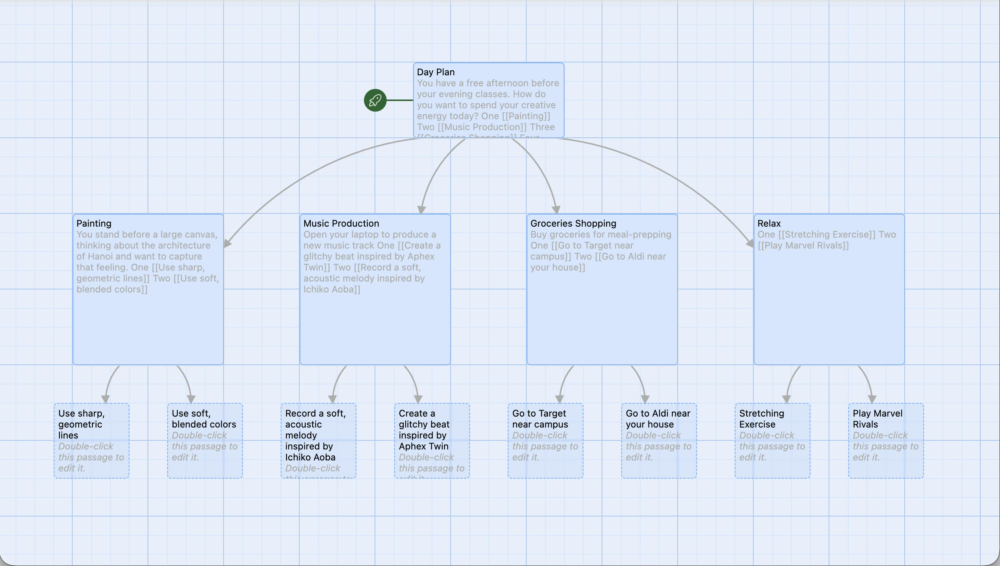
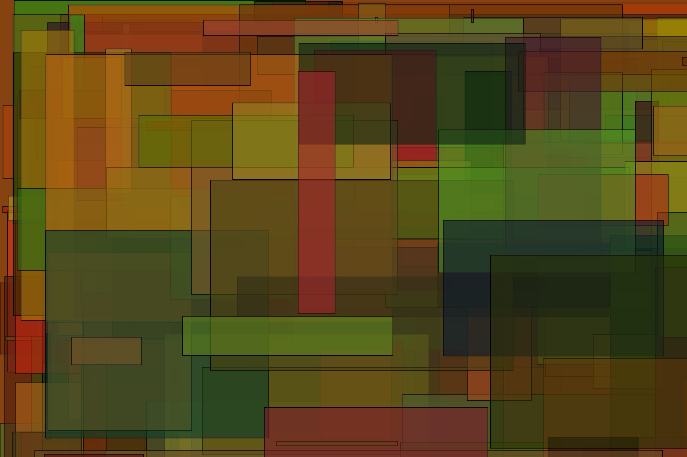
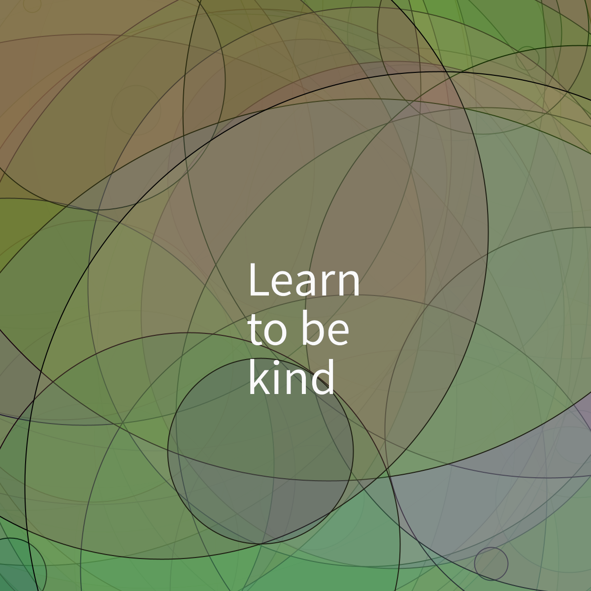

A curated portfolio of algorithmic visual design, front-end logic, and narrative architecture.
Project Description: An interactive frontend application designed to engage users with the environmental data surrounding ultra-fast fashion consumption, tracking individual behavior patterns through an intuitive web interface.

I engineered a single-page state management architecture using customized JavaScript logic to smoothly swap viewports without forcing a browser refresh. I enhanced user immersion by building an automated, math-driven visual progress bar and synthesizing programmatic click interactions using the browser's native Web Audio API framework.
Project Description: An interactive branching narrative experience built to explore state variables, conditional logic thresholds, and complex user-driven plot paths.

The core challenge was structurally mapping nonlinear story nodes to prevent broken logic loops. I resolved this by establishing a rigorous structural blueprint inside the Harlowe narrative architecture, binding progression variables cleanly to ensure text states shift dynamically based on previous selections.
Project Description: An autonomous visual simulation exploring canvas saturation, transparency layers, and randomized shape generation vectors.

I programmed a live canvas system that utilizes asynchronous alpha values and calculation divisors to layer vector objects iteratively. To balance performance and high fidelity, I restricted the math constraints to loop gracefully while designing custom event handlers to stop the iteration loop and capture high-resolution frame data on demand.
Project Description: An experimental math-driven artwork focused on linear drift, angular acceleration curves, and permanent background tracking trails.
I transitioned away from unpredictable random paths to follow intentional rotational translation frameworks. By chaining dynamic coordinate transformations directly onto an escalating acceleration scale, the program renders smooth, winding coordinate webs that update sequentially based on user input parameters.
Project Description: A computational script built to pair automated vector manipulation loops with fixed typographical alignment layers at specific frame landmarks.

The objective was to overlay clean editorial layouts perfectly on top of unguided background variations. I managed this by designing a runtime monitoring block that monitors frame processing limits. Once the application hits its target rendering counts, it freezes processing changes and introduces static text frames cleanly across the artwork layout.